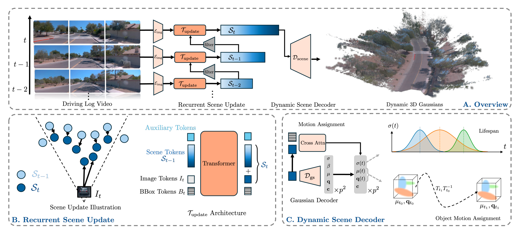

Dynamic driving scene reconstruction is critical for autonomous driving simulation and closed-loop learning. While recent feed-forward methods have shown promise for 3D reconstruction, they struggle with long-range driving sequences due to quadratic complexity in sequence length and challenges in modeling dynamic objects over extended durations. We propose UFO, a novel recurrent paradigm that combines the benefits of optimization-based and feed-forward methods for efficient long-range 4D reconstruction.Our approach maintains a 4D scene representation that is iteratively refined as new observations arrive, using a visibility-based filtering mechanism to select informative scene tokens and enable efficient processing of long sequences. For dynamic objects, we introduce an object pose-guided modeling approach that supports accurate long-range motion capture. Experiments on the Waymo Open Dataset demonstrate that our method significantly outperforms both per-scene optimization and existing feedforward methods across various sequence lengths. Notably, our approach can reconstruct 16-second driving logs within 0.5 second while maintaining superior visual quality and geometric accuracy.

@article{UFO,
title={UFO: Unifying Feed-Forward and Optimization-based Methods for Large Driving Scene Modeling},
author={Kaiyuan Tan, Yingying Shen, Ziyue Zhu, Mingfei Tu, Haohui Zhu,
Bing Wang, Guang Chen, Hangjun Ye, Haiyang Sun1},
url={} ,
year={2026}
}